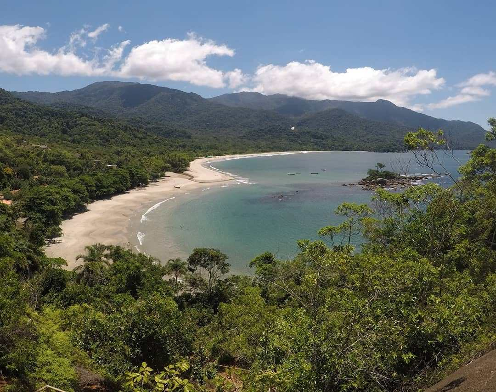
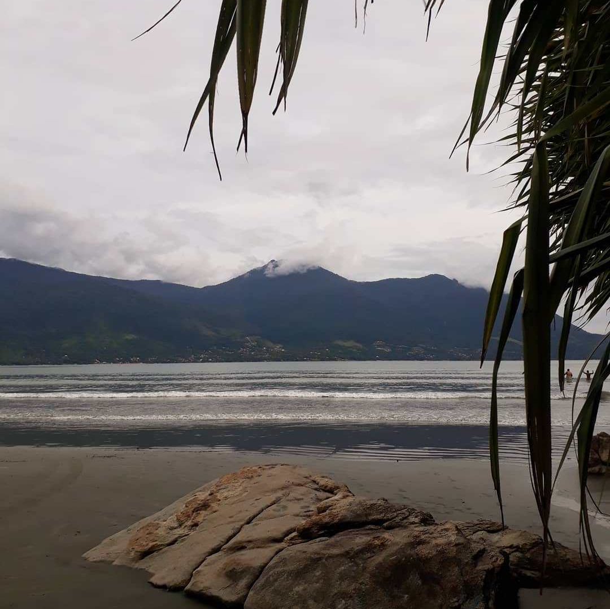
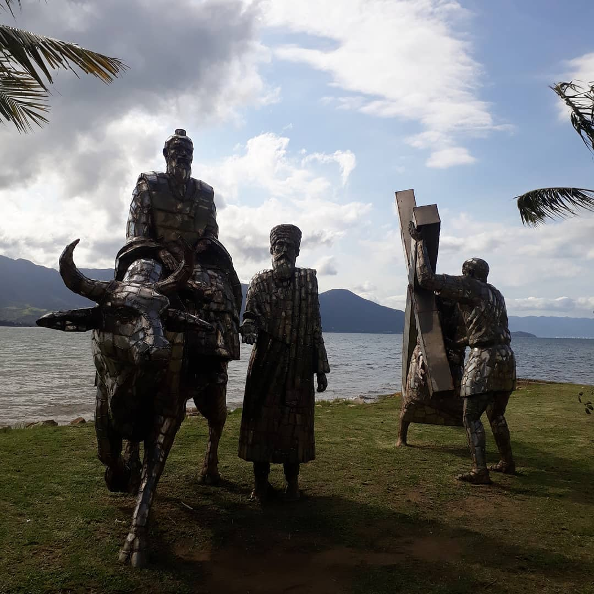
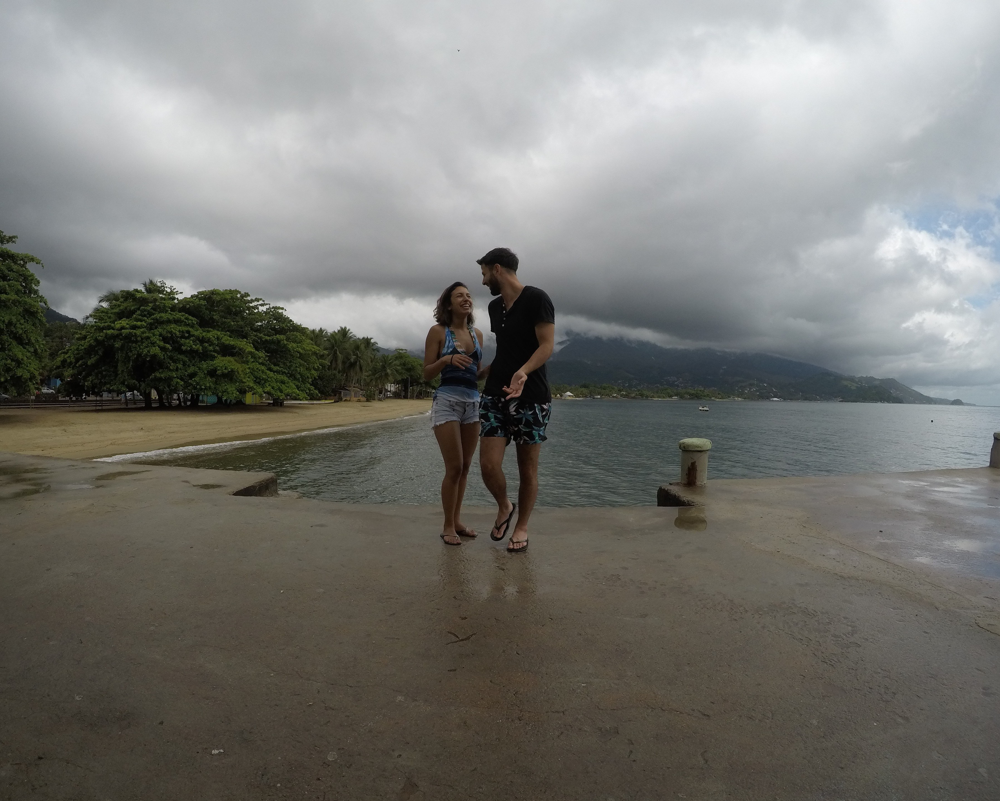

Este es el texto final de una serie de capítulos sobre Brasil que entrelazan las vivencias que tuve en mi paso por Río de Janeiro, Ilha Grande, Parati, São Sebastião e Ilhabela. No solo van a poder obtener información y detalles de los lugares sino que estos capítulos van a contener un hilo narrativo.
Mi travesía por Brasil había terminado. La vuelta a la vida diaria, a la vida real, era inminente. Estaba desembarcando en el Aeropuerto de Ezeiza (Buenos Aires) y mi padre me estaba esperando. Al otro día, tendría que presentarme en el trabajo y volver a la rutina. ¿Cómo se hace para volver a la infelicidad después de haber sido tan feliz? Me ponía a recapitular cada momento que había vivido en los últimos días y todo me parecía salido de un sueño. Mis caminatas por Flamengo en Río de Janeiro, las noches de danza en el "Aquario" de Ilha Grande y el sentimiento de estar esperando a la chica de la ducha en la terminal de Parati.
Llegué a mi casa y todavía me sentía extraño, y mientras buscaba el modo de volver a sentirme cómodo en mi departamento (siempre me pasa cuando vuelvo de viaje) volvió a vibrar el teléfono y desde ese día que no dejó de vibrar más. Era ella nuevamente y pasamos casi un mes conversando diariamente, nos empezamos a conocer más y de un modo más real. Hasta el momento, todo había sido propio de una película romantica hollywoodense, ahora tocaba poner los pies sobre la tierra y decidir si jugarse esos días que habían sido perfectos por algo más o dejarlos como el mejor de los recuerdos.
La famosa bahía con forma de corazón, Praia de Castelhanos, São Paulo, Brasil.
"Si ni tu ni yo nos conformamos fácil" reza la canción "Los seres únicos" de uno de mis grupos españoles favoritos y en este caso daba en el blanco. Dejarlo todo ahí no era una opción, volvernos a ver era un costo tanto económico como emocional fuerte, pero sin lugar a dudas que valía la pena.
Así fue que en pocos días ya tenía mi próximo viaje armado, me iría a San Pablo a pasar unos días con ella. Claro, la chica de la ducha conocía mi pasión por las playas y me preparó una sorpresa de la cual solo sabía que para llegar a ella debíamos pasar por un pueblito pesquero llamado São Sebastião.
No les voy a mentir, mi principal miedo era que no sea lo mismo, que no nos volvamos a sentir como esos días en Ilha Grande y en Parati y sabía que era una posibilidad. Al segundo día de estar en San Pablo, conociendo a bastantes personas, nos fuimos a la terminal de buses para esperar nuestro micro a São Sebastião (costó 69 reales por tramo). Fue ahí, que entre conversaciones en "portuñol" y "brincadeiras" tontas (bromas) empecé a sentir nuevamente esa magia que nos acompañaba desde que nos habíamos conocido en la ducha del Biergarten Hostel de Ilha Grande.
Praia Barequeçaba, São Paulo, Brasil.
Esa noche, después de haber pasado una tarde a pura conversación y nado en la Praia Barequeçaba (con un agua muy calentita) nos encontrábamos caminando por las pequeñas callecitas del pueblito pesquero que nos hacia recordar mucho a nuestro querido Parati. Algunas calles de adoquines, casas de colores y unos restaurantes hermosísimos para una velada de a dos hacian de São Sebastião un escenario ideal. Luego de comer, decidimos ir a pasear un poco por la costa, que mantiene todavía algunos cañones de la época colonial, y para nuestra sorpresa estaba en funcionamiento un pequeño parque de diversiones al mejor estilo de las ferias de las películas norteamericanas. Obviamente, no nos subimos a ningún juego. Sí, soy un poco miedoso.
El andar casi inconsciente por las pequeñas callecitas costeras de São Sebastião nos fue llevando a que terminemos en un muelle, con una llovizna que no hacía más que empezar y que nos recordaba cada vez más a Parati. Ahí sucedió, la magia empezó a brotar y empezamos a conversar con una profundidad impensada, al menos para mí, en ese momento me di cuenta que habiamos empezado a ganar terreno a esa materia tan difícil que es la confianza. Desde ahí hasta el fin de las vacaciones todo se volvió nuevamente un sueño.
El sueño siguió en Ilhabela, la sorpresa muy bien guardada por la chica de la ducha. En Ilha Grande había escuchado maravillas de ese lugar y cuando me entere que iríamos ahí me invadió ese hormigueo que siento cada vez que voy a conocer un lugar de playa nuevo. Sin embargo, la sorpresa final no era la isla, sino una playa en particular que ella estaba interesada en que conozca.
“Paixão – Caminhando no amor, na união e na justiça” del escultor Gilmar Pinna en Ilhabela, São Paulo, Brasil.
A Ilhabela se puede llegar muy fácil desde São Sebastião ya que hay un ferry gratuito para ciclistas y personas a pie que tarda aproximadamente 30 minutos. En el caso de ir con vehículos se debe abonar una tarifa para el transporte del mismo. Pueden chequear los horarios y los precios del transporte AQUÍ.
Los días fueron verdaderamente perfectos, desde conocer muchísimas playas, andar en bicicleta por la vía costera (es muy recomendable este paseo), hacer snorkel con miles de peces y hasta salir a caminar de noche por el hermoso centro, escuchar música en vivo y tomarse unos buenos tragos enfrente del mar.
Sin embargo, mi momento favorito fue cuando después de una travesía en 4x4 por la selva y de haber conocido una cascada hermosísima, llegamos al lugar sorpresa, la increíble Praia de Castelhanos. Apenas ingresar a la costa y ver kilometros y kilometros de arena con un agua tan transparente sentí un bienestar enorme. ¿Qué mas podía pedir? Pero aún había más, caminamos hasta un mirador que nos había recomendado el chico del tour y al llegar nos quedamos atónitos al ver la playa desde las alturas, entre la mixtura de la arena con el mar se formaba un corazón perfecto. ¿Un poco romántica la chica de la ducha, no? jaja Sinceramente fue una de las mejores vistas que tuve de una playa en mi vida, mis ojos estaban deleitados.
Disfrute como nunca mis días en São Sebastião e Ilhabela, como también así los que viví en Río de Janeiro, Ilha Grande y Parati y si algo aprendí de todos estos viajes a Brasil es que no hay que dejar pasar las oportunidades, que por más que estemos con angustias, con miedos, no hay que encerrarse. Alguien va a llamar a tu puerta y sino te funciona el timbre, aplaudirán, pero tenemos que estar dispuestos a abrir y dejar pasar.
Con la "chica de la ducha" en Ilhabela, São Paulo, Brasil.